Owner’s Manual & Warranty Information
VERSION 1.3
Welcome
Congratulations on your new purchase and thanks for making ESP your instrument of choice! ESP has been recognized for its high quality standards and meticulous craftsmanship since the company was founded in 1975. Every ESP instrument is inspected thoroughly by our quality control technicians prior to shipping to your local dealer.
All ESP instruments are covered by our limited lifetime warranty so you can rest assured that your new instrument will bring you many years of enjoyment.
Please take a few moments to read through this manual. It will provide you with answers to many of your questions as well as inform you about the care and maintenance of your new instrument.
Contents
Welcome
Guitar Anatomy
General Maintenance
Tuning Your Guitar
Strings & Tuning Machines
String Gauges
Stringing Your Guitar or Bass
Tuning Machine Adjustment
Neck & Truss Rod
Adjusting the Truss Rod
Checking Neck Bow
String Action
Intonation
Pickup Adjustment
Controls & Electronics
Pickup Selector Switch
Active Electronics
Control Layouts
Guitar Bridges
Tune-o-matic
Bigsby® Vibrato
Floyd Rose® Double-Locking Tremolo
Changing Strings (Floyd Rose®)
Fine Tuning
Adjusting the “Float” Level
Kahler®
Bass Bridges
Warranty Information
Limitations and Exclusions
How to Obtain Warranty Service
Warranty Registration Card
Guitar Anatomy
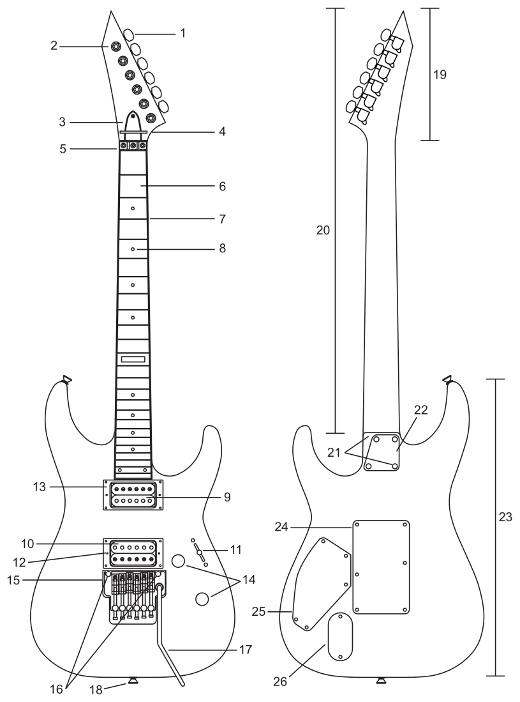
- Tuning Key
- Tuning Post
- Truss Rod Cover
- String Retainer
- Nut (Locking)
- Fingerboard
- Frets
- Position Markers
- Neck Pickup
- Bridge Pickup
- Pickup Selector
- Pickup Height Screw
- Pickup Mounting Ring
- Controls
- Bridge (Tremolo)
- Pivot Studs
- Tremolo Arm
- Strap Button
- Headstock
- Neck
- Neck Bolts / Neck Heel
- Neck Plate
- Body
- Tremolo Spring Cavity
- Control Cavity
- Battery Compartment
General Maintenance
Your ESP instrument is built to give you many years of satisfaction. Please keep in mind that keeping your instrument functioning properly will require periodic care and maintenance. Follow the simple maintenance guidelines outlined below to make sure your instrument continues playing properly and looking its best. Note: Although your instrument has been inspected by our quality control team, ESP highly recommends that you take your guitar to a qualified repair shop for an initial setup to be performed. As every player may have their own setup preferences matched to their playing style, this will ensure that your guitar works best for you.
Cleaning
Cleaning your guitar regularly is one of the best ways to maintain the finish and prolong string life. Clean your guitar after each use, making sure to wipe the fingerboard and strings as well as any of the plated parts such as tuners, pickups, bridge etc. Make sure to remove all perspiration, as it can lead to corrosion and rusting in metal hardware and strings. We recommend that all metal bridge parts be thoroughly cleaned and lubricated each time when changing strings to prevent corrosion and rusting caused by perspiration. For gloss-finished surfaces, such as the body, back of neck, and headstock, we recommend using any type of polish formulated specifically for musical instruments. Use lightly with a soft guitar polishing cloth or cotton rag. Using any other type of cloth will most likely scratch the finish on your instrument. Do not use any solvents or abrasive cleaners! Note: To clean a satin finish, use a dry cloth and simply wipe lightly to remove any dust or build-up.
Accessories
Be careful when using plastic, vinyl or synthetic leather guitar straps; guitar stands and wall hangers that use surgical rubber tubing or any other accessories that may touch your instrument’s finish. These materials may react with or cause damage to the finish on your instrument. Before using any guitar strap with your guitar, make sure the strap buttons and your strap are both secure when connected. A wooden guitar body can only withstand so much force with the factory strap button screws and is intended for use under normal playing conditions. If you intend to subject your guitar to more physical force than normal playing conditions, you may want to use larger or longer screws. If you do decide to change your strap buttons or screws, make sure the new buttons are installed correctly to avoid damaging your guitar (we suggest having a qualified repair technician do this for you). Note: Any damage as a result of strap button failure or damage that occurs from changing your buttons will not be covered under the ESP limited lifetime warranty.
Fingerboards
Rosewood and ebony fingerboards contain natural oils that may dry out over time. Sharp or protruding fret edges as well as a lighter appearance in the color of the fingerboard may be indications of dry wood. In either case, you may restore the wood to its original luster and prevent it from drying out by applying some lemon oil periodically. Remove all the strings, then apply a small amount of the oil to a clean lint-free cloth. Rub the oil into the entire fingerboard (only a small amount is needed). Wipe the fingerboard immediately to remove excess oil using a clean lint-free dry cloth.
Storage
When not playing your guitar, keep it in its case. If you don’t own a case, we strongly recommend purchasing an ESP hardshell case or gig bag. Using a case will offer the best possible protection against damage and will keep your instrument from gathering dust, which makes it harder to clean. Keep your guitar tuned to pitch under normal playing and storage situations. If you plan to store your guitar for a long period of time, or when traveling by air, loosen the strings to relieve some of the tension, but don’t remove them (one or two turns of each tuning key will be plenty). Always store your guitar at room temperature. Avoid exposing your guitar to any extremely hot, cold, damp, or dry conditions. NEVER leave your guitar in a hot or cold car or trunk – this will most likely cause severe damage to your guitar! Note: Damage to your instrument caused by neglecting or subjecting your instrument to extreme temperatures will not be covered under the ESP limited lifetime warranty.
Tuning Your Guitar
Tune your instrument using the tuning keys to raise or lower the pitch. Note: On a guitar with a locking tremolo system, you must first loosen the locking nut before you can adjust the tuning with the tuning machines. Although locking tremolo systems have fine tuners located on the bridge, they only allow limited (fine) tuning. Counter-clockwise rotation of the tuning keys will raise the pitch of the string while clockwise rotation will lower the pitch of the string you are tuning. Tune your guitar starting with the lowest to highest strings. After you have done this once, go back and double-check the tuning again. On some instruments you will have to do this a few times, especially if the strings are new or you have a guitar with a floating tremolo bridge. Tuning one string may affect the other strings and it is necessary to recheck the tuning until all strings are staying at the desired pitch.
Note: New strings tend to stretch and detune until they settle. It is a good idea to stretch the strings when you have just put on a new set. Do this after the initial tuning by bending notes and physically stretching each string by pulling away from the fingerboard (be careful not to pull too hard as you may break a string that way). After thoroughly stretching the strings repeat the tuning process. Note: For standard guitar and bass tunings please refer to the chart under factory string gauges.
Strings & Tuning Machines
We strongly recommend that you change your strings fairly often. If you play daily, we recommend that you change your strings every 1 or 2 weeks. A new set of strings will sound clear and precise, while an old set will sound dull and can produce unusual buzzing and dead notes. If you notice that your strings have become dirty, discolored, or produce an unusual buzzing or dull sound, then it is definitely time to put a new set of strings on your guitar. Always check your new strings and make sure they are smooth and free of defects before installing them. If there are any irregularities, such as kinks, twists, or any other manufacturing defects, they will cause buzzing and untrue notes as well as sound distortion. We recommend replacing one string at a time, so that all the tension is not taken off of the neck. This will make it easier to retune and set up the neck. If your guitar has a double-locking tremolo, please refer to the section on re-stringing those models.
String Gauges
ESP guitars are strung with the following gauges at our factory. Using the same gauge will probably save you some time in setting up and re-tuning your instrument after you change the strings. Note: String gauge is a matter of preference, and some players will be more comfortable using a different gauge than provided, especially when using alternate tunings. If you wish to change to a heavier gauge of strings, please consult a qualified repair technician to do this for you - using a heavier string gauge will require re-slotting the nut, adjusting the truss rod and changing other settings and should only be done by a qualified repair technician.
| Instrument | String Gauge (Low to High) | Tuning (Low to High) |
|---|---|---|
| 6-str guitar w/trem | 42/32/24/16/11/9 | E/A/D/G/B/E |
| 6-str guitar non-trem | 46/36/26/17/13/10 | E/A/D/G/B/E |
| 7-str guitar & baritone | 56/46/36/26/17/13/10 | B/E/A/D/G/B/E |
| 8-str guitar & baritone | 68/56/46/36/26/17/13/10 | F#/B/E/A/D/G/B/E |
| 6-str baritone | 56/46/36/26W/17/13 | B/E/A/D/F#/B |
| 6-str acoustic | 52/42/32/24W/15/11 | E/A/D/G/B/E |
| 4-str bass | 105/85/65/45 | E/A/D/G |
| 4-str bass (Detuned) | 130/110/90/70 | B/E/A/D |
| 5-str bass | 125/105/85/65/45 | B/E/A/D/G |
| 6-str bass | 125/105/85/65/45/30 | B/E/A/D/G/C |
| 8-str bass | 90/40, 70/35, 55/25, 40/20P | E/A/D/G w/doubled octave strings |
Stringing Your Guitar or Bass
When winding strings on to the tuning machine post, always wind them tightly and evenly to avoid any slipping that can occur if there are any gaps. Always use at least 2 or 3 winds around the post starting from top to bottom. As a rule of thumb, use about an extra 5cm (2 inches) of slack when restringing a guitar and about 8cm (3 inches) of slack when restringing a bass. For unwound, or plain strings, follow the diagram (Figure 1) detailing how to install these strings on to the post to prevent them from slipping.
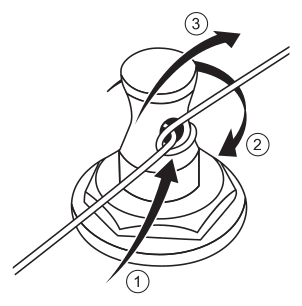
- Insert end of string into tuning post (make sure to leave enough slack for a few wraps around the post).
- Wrap end of string clockwise around post and under the string where it goes into the post (counter-clockwise when stringing tuners on treble side of headstock).
- Pull end of string tight over itself making a sort of knot (end of string may then be bent down and cut off cleanly near knot).
- Tune to pitch, making sure the wraps wind neatly down the tuning post.
For tuning machine posts where the string must be inserted into the post (most bass tuners), the strings must be cut to length in advance. Use a pair of string cutters and make sure to cut them long enough to give enough wraps around the posts. (If you’re not sure, then it’s better to guess longer than shorter. You can always cut more length off of the end of the string, but you can’t add any length once you’ve cut it).
Note: Strings are always wound clockwise around the posts on the bass side and counter-clockwise around the posts on the treble side of headstock.
Note: If you have locking tuners on your guitar (Figure 2), then you don’t have to put any winds on the post. Simply cut or loosen the old string and loosen locking pin by turning thumbwheel counter-clockwise. Remove old string and feed new string through post-hole. Tighten thumbwheel clockwise to lock the pin on to the string. Tune the string to pitch without any wraps on the post and cut off excess string. Note: Do not remove thumbwheel or use pliers to tighten/loosen locking tuning machines.
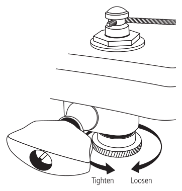
Note: If you have Gotoh locking tuners there is no thumbwheel located on the backside of tuner. To string the guitar, simply feed string through and tune as normal and string post will lock automatically. Tuner lock may be loosened at the top of string post by using a straight screwdriver or small coin (counter-clockwise on bass side of headstock / clockwise on treble side of headstock).
Tuning Machine Adjustment
Most ESP guitars have adjustable tuning machine heads. Many times, these parts can loosen after time, so it is a good idea to check the tension when changing strings. If you ever need to change the tension or feel of a tuning machine head, simply tighten (clockwise) or loosen (counter-clockwise) with a small Phillips or flathead screwdriver (Figure 3). This screw should be snug, but be careful not to over-tighten, as it is easy to strip the threading on the screw.
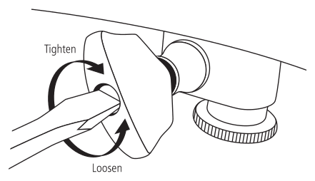
Neck & Truss Rod
All ESP instruments have an adjustable truss rod located inside of the neck. The function of a truss rod is to provide adjustment against the string tension on the neck. The following are the most common reasons why a truss rod adjustment might be needed: changing string gauge, changing tuning, environmental changes such as heat or humidity. Your guitar will operate poorly if the truss rod is not adjusted properly, so it is important to be able to recognize when your neck needs a truss rod adjustment. Truss rod adjustment should be performed periodically in order to keep your guitar playing properly. Adjusting the truss rod is the first step when setting up an instrument to play properly. You should always do the truss rod adjustment before setting string action, as adjusting the truss rod will affect the height of the strings.
Note: Most all ESP guitars are built with two-way adjusting truss rods. An ordinary truss rod may be loosened to the point where there is no more adjustment in the counter-clockwise direction. In most cases, this means replacing the neck or using heavier string gauges to bring the neck back to where it is not back-bowed. This will never happen with your guitar since it has a two-way adjusting truss rod.
Adjusting the Truss Rod
To adjust the truss rod, first locate the truss rod access at the headstock (Figure 4) or end of neck by body joint (Figure 5), remove the truss rod cover, and insert the correct size allen wrench (4mm) or pipe wrench (8mm) to adjust. Turn counter-clockwise to loosen and clockwise to tighten.
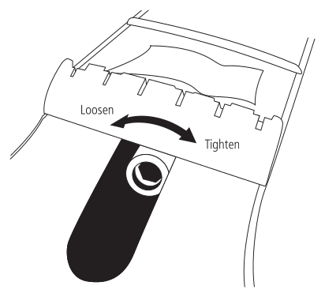
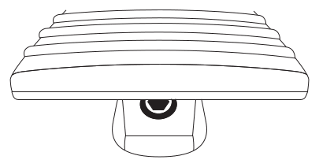
Note: If your truss rod nut access is not visible, it is possible your instrument has it located inside of the neck pocket (Figure 6) – this will require the neck to be taken off of the body to adjust the truss rod.
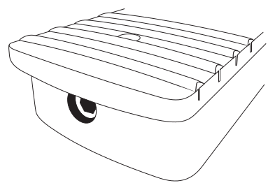
Note: Truss rod adjustments should only be performed by a qualified technician. Improperly adjusting or over-adjusting the truss rod can result in damage to the guitar neck and is not covered under the ESP limited lifetime warranty.
Checking Neck Bow
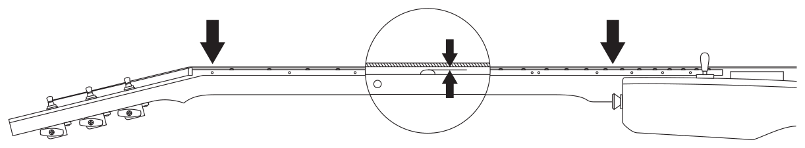
Correct truss rod adjustment is determined by the amount of bow or relief that is in the neck. To check neck bow, hold your guitar in playing position and check the low E and high E strings using the following method (Figure 7). With your fretting hand, hold down the string at the first fret. Now with your picking hand thumb, fret the same string at the area where the neck joins the body (around 16th fret). While holding both sections of the string in place, stretch your index finger of your picking hand as far as possible into the middle area of the neck (frets 7‑9) and tap the string down to the frets. The amount of distance that the string is travelling to reach the frets is the amount of bow that is in the neck (you may also use feeler gauges to measure this distance, but it’s not necessary). It is desirable to have a slight amount of bow, but not too much. About .3 mm - .5 mm (.010” - .020”) is usually plenty of bow. Having too much bow will cause excessive buzzing in the center area of the neck and will cause the strings to be farther away from the frets in that area making it harder to play. Having too little bow or backbow to the neck will cause excessive buzzing on open notes and fretted notes near the nut area, and will bring the action down too low across the entire fretboard.
Once you have determined the amount of bow that is in the neck, then adjust the truss rod accordingly (Figure 8). Loosen the truss rod (counter-clockwise) if your neck is backbowed. Tighten the truss rod (clockwise) if your neck is underbowed (too much bow).
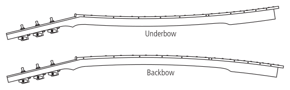
Note: Loosen no more than 1/4 turn, then tune and recheck neck bow until your neck is properly adjusted.
String Action
String action (or height) refers to the distance between the strings and the frets (Figure 9). This distance is measured at the 12th fret and is measured from the top of the fret to the bottom of the string on both the high and low outside strings.
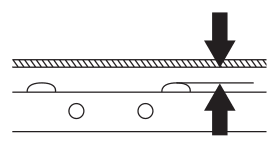
The string action is set on every instrument before it is shipped to authorized ESP dealers. However, there are many factors that can affect the string height and cause it to change. The main factor is usually a change in temperature and/or humidity. Since our instruments ship through different climates to their final destination, your guitar may need to be readjusted in order to bring it back to ESP factory specs. Other factors that affect string action include changing string gauge and/or tuning. High string action will make your guitar difficult to play, while low string action will cause excessive buzzing and unclear notes. If your guitar needs string action adjustment, find your particular bridge system and locate the height adjustment screws to properly adjust your guitar. You will need an accurate 6-inch steel rule to properly measure this distance.
Note: Make sure you have properly tuned your guitar and adjusted the truss rod before adjusting the string height, as having to redo these adjustments will significantly change the height of the strings.
Note: Setting your string action lower than factory settings may result in buzzing or rattling, and is not recommended. If you are experiencing excessive buzzing or rattling, please consult with a qualified repair technician, or double-check your neck adjustment and string heights.
Refer to the following recommended ESP factory string height settings for your guitar or bass.
| Instrument | Bass Side | Treble Side |
|---|---|---|
| Guitars | 2.0 mm (5/64”) | 1.5 mm (1/16”) |
| Baritones / 7-str | 2.5 mm (3/32”) | 1.5 mm (1/16”) |
| 8 String Guitar / Baritone | 2.8 mm (7/64”) | 1.5 mm (1/16”) |
| Acoustics | 3.2 mm (1/8”) | 2.0 mm (5/64”) |
| 4-str basses | 2.8 mm (7/64”) | 2.0 mm (5/64”) |
| 5/6/8-str basses | 3.2 mm (1/8”) | 2.0 mm (5/64”) |
Note: Changing string gauges may require setup adjustments for truss rod, tremolo, action, and intonation.
Intonation
Intonation on a guitar refers to how well the guitar plays in tune with itself when the same note or chord is played on a different area of the fretboard. Proper intonation is achieved by adjusting the length of each string at the string saddle (located on the bridge) to compensate for different string gauges, tunings, heights, and string material. By moving each string saddle to the correct location, your guitar will sound more in tune when you play across different areas of the fretboard.
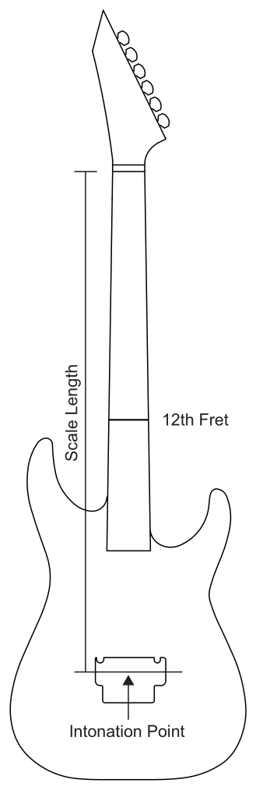
Intonation is set by comparing the fretted note at the 12th fret to the open harmonic at the 12th fret and adjusting the string saddle to make these two notes equal. (To get the 12th fret harmonic, lightly place one of your fretting hand fingers directly over the 12th fret, resting your finger against the string and pick that string normally with your picking hand.) The 12th fret is the exact center point of the guitar’s scale length (distance measured from nut to intonation point at bridge) and by adjusting the saddle for each string you are essentially fine-tuning that string to its optimum position (Figure 10).
Find out what type of bridge is on your guitar and locate the intonation adjustment screws to adjust the saddle location. Make sure you have tuned your guitar and adjusted the truss rod and string action before you start with intonation, as it should be the last step in the setup process.
Using an electronic tuner, play the 12th fret harmonic note. Now, play the fretted note at the 12th fret. If the fretted note is sharp, move the string saddle back (away from the neck). If the fretted note is flat, move the string saddle forward (towards the neck). On some guitars you may need to loosen the string first before moving the saddle. After you have adjusted the saddle, retune the string and repeat this process until you are able to match the fretted note with the harmonic.
Note: Use even pressure when fretting the notes during intonation adjustments so that all your strings are intonated according to the same level of pressure during fretting. This will result in a more accurate intonation when you are finished.
Pickup Adjustment
All magnetic pickups used in ESP guitars are adjustable. Raising or lowering a pickup will increase or decrease the amount of output from your guitar for that pickup. Pickup heights should be adjusted so that both pickups are at about the same volume level compared to each other (this is how we adjust the pickups from the factory). However, you may want to change the height of the pickups in order to achieve a different output level for each pickup. Since the pickups are magnetic it is important not to adjust them too close to the strings. If a pickup is too close to the strings, it will affect the vibration of the strings and could result in oscillating or wavering notes, extra fret buzzing, and distortion. If you notice these problems, lower the pickup until the notes ring true. Use a small screwdriver to adjust the pickup height (there will usually be 2 height adjustment screws for each pickup - one on the bass side and the other on the treble side).
Note: Some instruments have pickups with adjustable pole pieces that allow you to adjust the individual output levels of each string.
The following are maximum bridge pickup heights as set at the ESP factory. Pickup height is measured from the top of the pickup to the bottom of the string while holding down the strings to the fretboard at the last fret. Keep in mind that pickup heights are not meant to be at an exact level or specification for correct operation of your instrument. Each player can set their own pickup heights according to their desired output levels.
| Instrument | Bass Side | Treble Side |
|---|---|---|
| Guitars | 2.5 mm (3/32”) | 1.5 mm (1/16”) |
| Bass | 3.5 mm (9/64”) | 2.5 mm (3/32”) |
Note: Active pickups have less magnetic pull and may be adjusted closer to the strings than passive pickups.
Controls & Electronics
The following are some brief descriptions of the basic electronic controls and terminology. For more specific information on your exact model please refer to the control layouts and diagrams (Figure 12) or visit our website at www.espguitars.com.
Note: Most control knobs are easily tightened or removed by using a 2.0mm allen wrench or flathead screwdriver to adjust the set screw on the side of the knob. If a knob becomes loose, you should first remove the knob and check the control to make sure it is properly tightened to the body before re-tightening the knob onto the control shaft. A loose control shaft can easily be tightened using any adjustable wrench. You will need to remove the electronics backplate and hold the control from the back of the guitar while tightening the nut from the top of body. This will ensure that you do not move the controls or damage / break any of the wire connections.
Volume Control
Controls the master output level of the guitar. Turning the knob clockwise will increase the volume while turning counter-clockwise will decrease the volume. Some instruments will have multiple volume controls in which case, you’ll find there’s a volume control for each pickup. Note: In the case of multiple volume controls, when either volume control is turned off and the pickup selector switch is in the middle position w/ both pickups on, the entire signal of the instrument will be turned off.
Tone Control
This adjusts the high frequencies present in the signal coming from your guitar. With the knob turned fully clockwise, all frequencies are present. Turning the knob counter-clockwise decreases the high frequencies.
Output Jack
This is where the output signal of the guitar is sent to the amplifier by plugging in any standard 1/4” guitar cable. Most output jacks are located near the bottom corner of the guitar below the electronics cavity. Note: If your guitar or bass has active electronics, you should always remove your cable after playing. Leaving your cable plugged into your instrument will drain the battery.
Note: If your jack ever comes loose, do not tighten it without first removing the jackplate and securing the inside of the jack, otherwise you may break the wires causing your guitar to lose output.
Pickups
The pickups on your guitar turn the string vibrations into an electronic signal that is sent to your amplifier. Pickups are made up of magnets and coils of wire. There are 2 types of magnetic pickups used in most electric guitars - Single Coils and Humbuckers. A Single Coil pickup is made up of only 1 coil of wire and generally has a weak output. Due to its construction, a single coil will be noisy since it cannot block hum and RF interference. Humbuckers on the other hand are in fact “hum-cancelling” because of their construction using 2 coils side by side. The signals from each coil are combined in a certain way that cancels the hum and RF interference that is common with single coil pickups. Humbuckers generally have a higher output signal compared to single coils.
Pickup Selector Switch
The selector is used to switch between different pickups or combinations of pickups (on guitars with two or more pickups). Pickup selector switches are either 3-way slotted, 3-way toggle, or 5-way slotted, shown as the 5-way Ultraswitch (Figure 11).
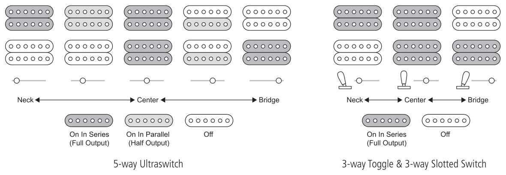
Series: combination of coils in full output (this is traditionally how most humbucking pickups are wired).
Parallel: combination of coils wired to reduce output and simulate a single coil, yet still remain hum-cancelling.
Note: On some guitars with 2 pickups and no standard switch, a push-pull volume control is used to select between the pickups (in this case, each pickup can only be turned on by itself – there is no position in which both pickups are on at the same time).
Passive Electronics
Passive pickups and controls do not use a battery. They are considered standard electronics because there is no manipulation of the signal from the pickup other than decreasing the volume or high frequencies (nothing is added to the tone).
Active Electronics
Active pickups and circuits use power (9-volt alkaline battery) to manipulate the signal coming from the pickups. Some systems may use a passive pickup in conjunction with an active preamp or EQ section. Any combination will result in the output level of the guitar being considered Active or “Low Impedance”. If you have active electronics or pickups in your guitar or bass, make sure your amplifier has an input labeled “LOW” or “ACTIVE”. Using a standard input on an amplifier could result in unwanted distortion, as the signal will overpower the amplifier’s input section. You should change your battery if your guitar or bass sounds distorted, has a weak signal, or no output at all. Always use a high quality alkaline battery for maximum performance out of your active electronics. To locate your battery, remove your battery compartment plate on the back of your guitar using a regular Phillips screwdriver (in some cases, you may need to remove the electronics backplate if you do not have a separate battery compartment). Note: Battery life for each active component ranges from 625-3000 playing hours. Generally, your battery life will be less with the more active components you have.
Note: Active pickups do not require a bridge ground connection - a wire usually connecting the bridge or part of bridge system to the back of the volume or tone controls. If you notice a loose wire not attached, this most likely is the bridge ground and is normally installed in the guitar but not connected to the ground (back of volume or tone control) with active pickups.
Push-pull/Push-push Coil Tap
Usually located on a volume or tone control - by pushing or pulling up on the knob, the switch will be engaged. When in the “up” position, one coil from the pickup will be turned off making the output now about half of the original signal. Since the pickup is now a true single coil, it is normal for it to have more noise (hum) because the pickup is no longer a humbucking pickup.
Balance Control
Instead of a selector switch, it is traditional for basses to have a balance control with a center detent. This controls which pickup’s output is being sent to the amp. In the center position, both pickups are at full volume. Turning clockwise will select the neck pickup while turning counter-clockwise will select the bridge pickup. With a balance control you can blend between pickups to get a certain tone or pickup combination desired.
Active Bass EQ Controls
Most of our basses feature an active EQ system with 2 or 3 controls: bass boost/cut, mid boost/cut (only on a 3-band EQ), and treble boost/cut. All the controls have a center-detent which is the “0” position. Turning clockwise from that point increases the output of that frequency, while turning counter-clockwise from the center point decreases that frequency from the signal. Note: Active EQ systems require a 9V battery in order to function.
![Eight control layouts, knobs top to bottom. 3-Band EQ – Bass (Active): Bass Boost/Cut, Master Volume, Mid Boost/Cut, Treble Boost/Cut, Balance. 2-Band EQ – Bass (Active): Master Volume, Bass Boost/Cut, Balance, Treble Boost/Cut. V / V / T – Bass: Neck P/U Volume, Bridge P/U Volume, Master Tone. V / Bal / T – Bass: Master Volume, Balance, Master Tone. Volume / 3-way / Tone: Master Volume, 3-way P/U Selector, Master Tone. V / V / T – Guitar: Bridge P/U Volume, Neck P/U Volume, Master Tone, 3-way P/U Selector on upper horn. KH Series Guitars: 3-way P/U Selector, Neck P/U Volume, Bridge P/U Volume, Master Tone. V / T / V / T – Guitar: Neck P/U Volume, Bridge P/U Volume, Neck P/U Tone, Bridge P/U Tone, 3-way P/U Selector](Images/fig12-control-layouts.png)
Guitar Bridges
The bridge on your instrument is located on the body behind the pickups. This is where the ball-ends of your strings are attached and follow over the string saddles. The string saddles are individually adjustable for intonating your guitar. On many bridges individual string heights can be adjusted via the saddle, while on other bridges this is simplified by having treble and bass side adjustments only. On the latter type there is a pre-set radius that sets your saddles in a curvature to match the radius of the neck. Some bridges allow the strings to be locked into place while others such as TonePros allow the bridge and tailpiece to be locked into place onto the bridge posts.
Tune-o-matic
This type of bridge has separate screws for intonating each string saddle, and height adjustment via the bridge’s mounting screws using a flathead screwdriver (Figure 13). The ball-ends of the strings are either attached to a stop-bar tailpiece, or fed through the body of the guitar (“string-thru”) and over the bridge.
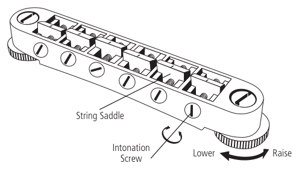
TonePros® Tune-o-matic
This bridge starts as a stock Tune-o-matic and adds set-screws to lock down the bridge and tailpiece (Figure 14). By locking the bridge and tailpiece to the studs, the tone and sustain of the instrument are greatly improved. And since the bridge cannot move, the tuning and intonation of the guitar will remain locked in place. Another cool feature is that when restringing your instrument, you can cut all the strings off, flip the guitar around while you work on it and the bridge or tailpiece will stay locked to the body – no bridge parts will fall off.
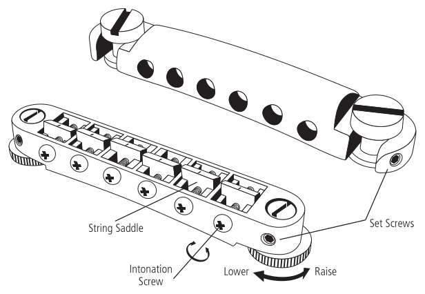
Acoustic Bridge
If you have an acoustic or semi-acoustic model, your bridge is made of rosewood like a traditional acoustic bridge and the bridge is glued to the top of your guitar. Restringing an acoustic bridge is done by inserting the ball-ends through the back of the bridge and feeding the strings over the top of the saddle, or inserting the ball-ends through the top of the bridge and holding them in place with the bridge pins. On this type of bridge, there are no simple string height or intonation adjustment screws. There is only 1 string saddle generally made from bone or plastic, and it is preset into the bridge at the intonation point. Adjusting string height requires the saddle to be removed and sanded down to achieve the desired string height. Note: This should only be done by a professional guitar repair technician.
Bigsby® Vibrato
Used on our Xtone guitars, this classic design has a unique look and sound and is used for manually creating a true vibrato. A Bigsby is actually the tailpiece section of the bridge system and mounts behind a standard Tune-o-matic bridge (Figure 15). The strings are attached to pins on the bottom inside section of the back roller, and then fed underneath the front roller and over the Tune-o-matic bridge as normal. By pressing the handle the tone of all six strings will be flatted by approximately one half-tone if the handle is depressed approximately 1/2”. In the same manner, if the handle is raised approximately 1/2” from the normal “at rest” position, all six strings will be sharped by approximately one-half tone.
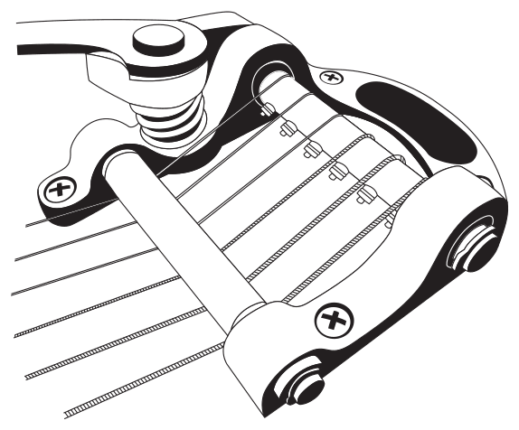
Vintage Tremolo
Also referred to as a traditional tremolo, this bridge mounts to the top of the body without a recess route so the bridge sits on the top of the body. This type of tremolo is used for slight vibrato effects, not heavy dive-bombing or whammying effects such as a Floyd Rose locking tremolo. A vintage tremolo is mounted to the body with either 2 or 6 screws located at the front of the bridge. The strings are inserted through the back of the guitar through the backplate holes and into the block of the tremolo then strung over each string saddle. On this type of bridge, each saddle height is adjustable and the action height should be adjusted with the string saddles, not the mounting screws. The tremolo arm is threaded into the hole on the treble side of the bridge plate.
Floyd Rose® Double-Locking Tremolo
The Floyd Rose double-locking tremolo was popularized in the early 80’s and has remained a popular system ever since. This system locks the strings both at the string saddle and the nut (Figure 16). By locking the string at both locations, there is minimal if any string slippage and almost no friction except at the point of the knife-edge/pivot studs. This results in a guitar that stays in tune extremely well, and allows the pitch of the strings to be manipulated via the tremolo arm or “whammy bar”.
On ESP guitars, this bridge is almost always installed with a recess route in the body, allowing the bridge to rest lower than a traditional bridge. This also allows room for both pulling up in pitch and pushing down in pitch. This system is also referred to as a floating bridge since it does not rest against the body of the instrument.
An important thing to keep in mind about this system is that since this bridge uses springs in the back of the body to balance against the tension of the strings, any change in tuning or string gauge will drastically affect the performance and require adjustments to be made. The tremolo arm is inserted into a fitting on the treble side of the bridge and then the threaded collar on the arm can be tightened by hand to the desired level of tightness.
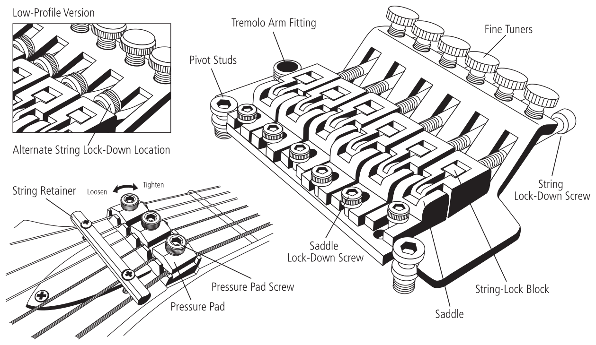
Note: There are two versions of Floyd Rose licensed bridges found on ESP instruments and the main difference is the location of the string lock-down screws in relation to the string saddles. This alternate version is referred to as a Low-Profile design.
Changing Strings (Floyd Rose Double-Locking Tremolo)
Note: We recommend that you only change one string at a time until you are familiar with this process. Removing all the strings at once will cause the tremolo to pull back into the recess route and will make it harder to change the strings and retune your guitar. Changing string gauges will also drastically change the settings and make the bridge lift up high off the body or sink back into the recess route.
- Loosen pressure pad lock-down screws on locking nut using a 3mm allen wrench. Loosen string using tuning key and remove string completely using string cutter.
- Loosen string lock-down screw on bridge using a 3mm allen wrench. Remove string from saddle.
- Cut off ball-end of new string above the string winding and insert string in front of the string-lock block.
- Tighten string lock-down screw so that it is snug. Note: Do not over-tighten this screw as it can strip the threading inside the saddle.
- Feed string through locking nut, under pressure pad, under string retainer and through tuning key post, wind a couple of turns down the tuning key post and tune to pitch. Note: There is no need to use special winding as described in the stringing & tuning section since your string will be locked down at the locking nut.
- Repeat steps 1 - 5 for each string.
- After replacing the desired string(s), tune all strings to pitch, stretch strings, and retune. You will have to retune your guitar a few times until the tremolo has settled and the guitar remains in tune. Once your guitar is holding tune, tighten all three pressure pad screws. Note: Make sure the orientation of the pressure pads matches the drawing in Figure 16. If the pressure pads are not oriented properly in the locking nut, the strings will not lock down properly and you may experience tuning problems.
Fine Tuning
Once your strings are locked at the nut, you can fine-tune your guitar using the fine tuners located on the tremolo behind the string saddles.
Note: If fine tuners run out of adjustment, loosen the pressure pad lock-down screws at the locking nut, adjust your fine tuners into the middle of their adjustment and retune using your tuning machines on the headstock. Once the tuning is stable, lock down the strings at the locking nut and you may use the fine tuners again.
Adjusting String Height
There are 2 screws also referred to as pivot studs which raise or lower the Floyd Rose bridge (see diagram). These screws are located at the front of the bridge – one on the bass side and the other on the treble side. Turning the screws clockwise will lower that side of the bridge while turning counter-clockwise will raise that side of the bridge. Note: The base-plate of the bridge should be parallel to the top of the body. If the bridge-plate is angled too high or too low, you need to first adjust the spring tension located in the back cavity of the guitar before you adjust the bridge height using the pivot studs.
Adjusting Intonation
Adjusting the intonation on a Floyd Rose bridge requires a few more steps and a little patience in comparison to most bridges. After you have determined which way the string saddle needs to be moved, loosen the pressure pad screw on the locking nut then loosen the string you will be adjusting. Next, loosen the saddle lock-down screw and move the saddle forward or backward. Tighten the saddle lock-down screw, tune string to pitch and check intonation. Continue repeating this process until the intonation is set. Once you are done, lock down the string at the nut by tightening the pressure pad screws.
Adjusting the “Float” Level (Spring Tension)
The tremolo springs are located in the cavity on the back of the guitar. You must remove the plastic backplate to access the tremolo springs and adjustment claw. The tremolo springs are used to counter-act the tension of the strings and adjust the angle of the bridge on the top of the guitar. When your guitar is tuned to pitch, the tremolo’s base plate should rest parallel to the top of the guitar body. If you notice your bridge angled upward or backward into the recess route, then you need to adjust the tremolo springs to bring the bridge back to the correct angle. If your tremolo is angled away from the body, then the springs need to be tightened. If the tremolo is angled into the recess route, the springs need to be loosened. Loosen or tighten each screw about 1/4 turn if needed, then retune your instrument (Figure 17). You may need to repeat this process a few times until finally your bridge remains in tune and rests parallel to the top of the body.
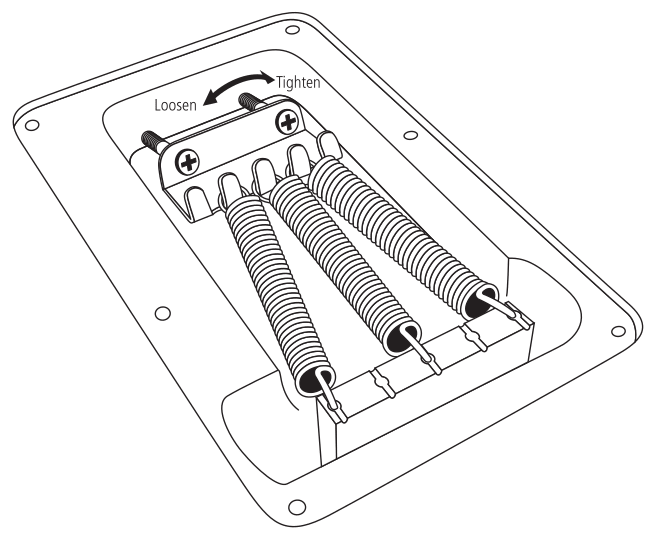
There are different combinations of spring placement that can be used based on your string gauge and tuning preference. From the factory, ESP guitars are set up with 3 springs that are connected to the inside 3 hooks on the spring claw and angle outward to the 1, 3, 5 position holes on the bridge block (Figure 18). Having the springs angled like this is the best way to counter-act against the string tension and bring your bridge back to its center point. An extra spring is included with all our tremolo-equipped guitars. This extra spring may be used if heavier string gauges are ever used on your guitar. You may also remove the middle spring using only 2 springs if you use light gauge strings and want the bridge to have a softer feel.
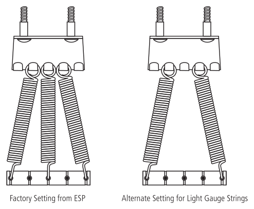
Note: Using less springs may decrease tuning stability.
Kahler®
ESP guitars using Kahler bridges will also include a locking nut that will improve performance. The Kahler bridge operates on a cam system and allows extreme adjustment in pitch (both up and down) without altering the height of the strings over the saddle (they float on roller saddles). This bridge allows for individual string height, intonation, and side-to-side adjustment. Some Kahler bridges include a locking mechanism located behind the fine tuners which allows the bridge to be locked into place and used as a fixed bridge. Restringing is made simple with all Kahler systems: simply cut off old string and insert new string’s ball-end into the notch located behind each string saddle. Feed through locking nut and tune to pitch. Note: You may need to loosen fine tuners slightly to gain access to insert the ball-end of string. Note: When your strings have been properly stretched and are holding tune, lock the strings at the nut & retune before using the tremolo.
Bass Bridges
Deluxe (DB4 / DB5 / DB6)
This is our simplest bass bridge designed for ease of use and maximum adjustment capabilities. Each saddle has 2 height adjustment screws for string action adjustment (use the 1.5mm allen wrench included with your bass). The intonation screws are at the back of the bridge and can be adjusted using a small Phillips screwdriver. This bass is strung traditionally with the string’s ball-end feeding through the hole in the back of the bridge located behind each string saddle.
BB604 / BB605
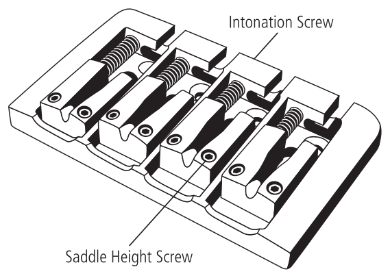
These bridges are designed to allow maximum tone transfer from the strings through the body. They also have a “string thru body” option that is available on certain models (not available with 35” scale length basses). If you have this option on your bass, you will be able to feed the string through the holes in the back of the body through the bridge and over the string saddles. You may also want to string the bass like normal, hooking the ball-end of the string at the back of the bridge section. Stringing through the body increases string tension, which may be desirable if using lower tunings (or simply to add string tension and beef up the tone of your bass).
There are 2 saddle height adjustment screws for each string to adjust the string action (use the 1.5mm allen wrench included with your bass). Use a small Phillips screwdriver to adjust the intonation screws located behind the back of the bridge section (Figure 19).
Tune-o-matic Bass
Just like a guitar Tune-o-matic bridge, this is comprised of 2 sections – the bridge and the tailpiece. The tailpiece holds the ends of the strings in place and the strings are then strung over each string saddle. The saddles are individually adjustable for intonation and there are 2 screws to adjust the bass and treble sides for overall string height. Note: On 8-string basses, there will only be adjustment for each set of strings.
ESP Guitars Limited Lifetime Warranty & Instrument Info
Note: Please contact your authorized ESP Dealer or Distributor regarding all warranty claims.
Your new ESP instrument is warranted to be free of any defects in materials and workmanship if used under normal operating conditions for the life of the original retail purchaser, subject to the limitations described below. This warranty is non-transferable and applies only to the original purchaser when product is purchased as NEW from an Authorized ESP Dealer. Instruments sold as Factory Seconds do not carry a lifetime warranty, but are limited to a 90-day manufacturer’s warranty. Electronic parts and guitar hardware are limited to a warranty period of one (1) year from date of purchase.
PLEASE NOTE: IN ORDER TO VALIDATE YOUR WARRANTY, RETURN YOUR WARRANTY REGISTRATION CARD TO ESP WITHIN THIRTY (30) DAYS FOLLOWING THE ORIGINAL DATE OF PURCHASE. PLEASE RETAIN YOUR SALES RECEIPT, AS IT IS YOUR PROOF OF PURCHASE, AND IS REQUIRED FOR ALL WARRANTY SERVICE REQUESTS. THIS WARRANTY IS EXTENDED TO THE ORIGINAL RETAIL PURCHASER ONLY AND IS NOT TRANSFERABLE.
If this ESP instrument malfunctions at any time as a result of faulty materials or workmanship, ESP will repair the defect(s) or replace the instrument, as it deems appropriate, at its sole discretion. In the event that original materials are no longer available, ESP reserves the right to use materials regularly utilized at the time of repair. If replacement of customer’s instrument is deemed necessary by our staff, ESP will replace the instrument with one of the same or most similar style of a value not in excess of the original purchase price of customer’s instrument.
This limited lifetime warranty covers the cost of both labor and materials on any repair deemed necessary by our Warranty Department Representative for the lifetime of the original retail purchaser. In the unlikely event that the customer’s instrument is destroyed, lost, or damaged beyond repair, while in the possession of ESP for warranty repair, ESP will replace that instrument with one of the same or most similar style of a value not in excess of the original purchase price of customer’s instrument. Owner at owner’s expense must carry any insurance covering the instrument, including but not limited to collector’s value insurance.
This Warranty is Subject to the following Limitations and Exclusions
The following items are not covered by this warranty:
- Any instrument whose serial number is missing, or has been altered or tampered with in any manner.
- Any instrument that has been modified after original shipment from ESP.
- Any instrument whose warranty registration card has been altered or upon which false information has been given.
- Any factory-installed electronics and hardware after a period of one (1) year following the original date of purchase.
- Any instrument that was NOT purchased from an Authorized ESP Dealer, or upon which any unauthorized repair or service has been performed.
- The cost of an initial setup and regular maintenance of your new instrument, including neck/truss rod adjustments, string changes, action adjustment, and intonation.
- Normal wear and tear on any serviceable part of the instrument including electronic controls and switches, jacks, worn frets, plated surfaces, tuning machines, string replacement, scratches in pickguards or plastic parts, saddles and nuts; normal paint wear and tear including damages, discoloration, and paint shrinkage of the instrument finish for any reason.
- The labor reimbursement cost or parts replacement cost of any repair not authorized or performed by ESP.
- Damage as a result of strap button pulling out of body (Note: Factory strap buttons mounted to the body can only withstand so much pressure. They are not intended to withstand any severe abuse. If player will be using a strap, ESP recommends that player check strap and buttons prior to use in order to avoid any mishaps. ESP will not be responsible for any such claims.)
- Defects in finishes such as cracks, splitting, or warping of wood due to changes in temperature or humidity, exposure to sun, fire, moisture, body salts and acids, other chemicals or non-industry approved polishes.
- Instruments that have been subjected to extreme humidity or temperature conditions.
- Subjective issues such as tonal characteristics, grade and color of wood or finish.
- Playability of an instrument whose “action”, or string height, is lower than recommended standard “action” settings defined in the ESP owner’s manual.
- Case and case hardware wear and tear of any kind.
- Shipping damages of any kind.
- Freight charges to ESP or Authorized ESP Dealer for customer owned goods.
- All other defects, deterioration, and damage due to normal use, wear and tear, aging, misuse, neglect, improper operation, abuse, accident, theft, or acts of Nature.
- Any and all charges if no problem is found at time of repair/inspection.
- Any and all charges incurred from priority service requests (Rush Service) or priority shipping for replacement parts or return of customer’s merchandise.
ESP assumes no liability either for property damage resulting from failure of this product or for any loss of income, satisfaction, or damages arising from the loss of use of same due to defects or availability of same during service.
THE FOREGOING CONSTITUTES THE ONLY WARRANTY MADE BY ESP WITH RESPECT TO THE PRODUCTS AND IS MADE EXPRESSLY IN LIEU OF ALL OTHER WARRANTIES EXPRESSED OR IMPLIED. Any implied warranties, including without limitation, any implied warranties of merchantability or fitness for any particular purpose, imposed under state law are limited to the duration of this limited warranty. Some states do not allow limitations on how long an implied warranty lasts, so the above limitations may not be applicable to you.
ESP SHALL NOT BE HELD LIABLE FOR ANY SPECIAL, INDIRECT, CONSEQUENTIAL, INCIDENTAL, OR OTHER SIMILAR DAMAGES SUFFERED BY THE PURCHASER OR ANY THIRD PARTY, INCLUDING, WITHOUT LIMITATION, DAMAGES FOR LOSS OF PROFITS OR BUSINESS OR DAMAGES RESULTING FROM USE OR PERFORMANCE OF THE INSTRUMENT, WHETHER IN CONTRACT OR IN TORT, EVEN IF ESP OR ITS AUTHORIZED REPRESENTATIVE HAS BEEN ADVISED OF THE POSSIBILITY OF SUCH DAMAGES, AND ESP SHALL NOT BE LIABLE FOR ANY EXPENSES, CLAIMS, OR SUITS ARISING OUT OF OR RELATING TO ANY OF THE FOREGOING.
How to Obtain Warranty Service
If you experience any malfunction that is covered under ESP’s Limited Lifetime Warranty, you should notify the ESP Dealer where the instrument was purchased. If this Dealer is not available, please contact your nearest ESP Dealer or Distributor. The Dealer must ship the instrument, freight and insurance pre-paid to ESP.
PLEASE NOTE: Owner carrying Original Purchaser’s Limited Lifetime Warranty is responsible for all freight & insurance costs to ship instrument to ESP or nearest Authorized ESP Dealer. For a list of authorized ESP Dealers and Distributors, please visit our website at www.espguitars.com.
Dealer must contact ESP for information and authorization to return any ESP product. No instrument may be returned to ESP without such prior Authorization.
PLEASE NOTE: If Return Merchandise Authorization number (RMA#) is not clearly marked on packages being returned to ESP, they WILL BE REFUSED!
Only Authorized ESP Dealers & ESP’s own service center may perform warranty service and any service performed by unauthorized persons will void this warranty. ESP shall not be held liable for any and all defects or damage caused by services performed by unauthorized persons.
ALL instruments returned to ESP must include a complete written description of the malfunction of the instrument. After returned instrument is inspected upon its arrival, ESP or the Authorized ESP Dealer will advise the Owner of the approximate date of completion. The repaired instrument or part will be returned to the Dealer or Owner freight and insurance prepaid.
No representative or other person is authorized to assume for ESP any liability except as stated in this warranty. This warranty gives you specific rights, which vary from state to state.
PLEASE NOTE: ESP does not offer repair service of any kind other than warranty repair service. If your guitar needs any service or maintenance that is not covered under warranty, it should be taken to any qualified professional.
For more information:
Write: ESP Guitars Warranty Service Center
10913 Vanowen Street, North Hollywood, CA 91605
Call: 1-800-423-8388
Online: www.espguitars.com
Warranty Registration Card
INSTRUMENT INFORMATION (Fill Out And Save For Your Records!)
Dealer Information
- Purchase Date:
- Purchased From:
- Dealer Address:
- Dealer Phone:
Instrument Information
- Model:
- Finish:
- Serial #:
- Custom Order #:
- Final Inspection:
Specifications
Body: Mahogany · Maple · Agathis · Basswood · Alder · Ash · Walnut · Other
Body Top: N/A · Flamed Maple · Quilted Maple · Spalted Maple · Ebony · Other
Fretboard: Rosewood · Maple · Ebony · Other
Construction: Bolt-On · Set Neck · Neck-thru · Set-thru
Pickups: ESP · EMG® (active) · EMG-HZ (passive) · Dimarzio® · Seymour Duncan® · Duncan Designed™ · Basslines® · B-Band® · Other — Bridge: · Middle: · Neck:
Active Electronics: 3-band EQ · 2-band EQ · Tone Boost · Boost Switch · EMG SPC Control · B-Band · Other
Bridge: Floyd Rose Original · Floyd Rose 1000 Series · Floyd Rose Special · Licensed Floyd Rose · Kahler · Vintage Tremolo · Bigsby Licensed Vibrato · Tune-o-matic · TonePros · Wilkinson® · Bass · Hipshot® · String-thru-body Bass · Other
Tuners: ESP · ESP Locking · Sperzel · Gotoh® Magnum Lock · Gotoh · Hipshot · Grover® · Other
Other: Schaller Straplock · Earvana® Compensated Nut · Earvana Compensated Saddle
DETACH HERE & SEND TO ESP
WARRANTY REGISTRATION (Detach & Send to ESP)
Please fill out the following information to register your instrument.
Instrument Information
Model · Finish · Serial # · Custom Order#
Personal Information
First Name · Last Name · Street Address · City · State · Zip · Country · Age · Gender · Phone Number · Email
Dealer Information
Purchased From · City · State · Country · Purchase Date · Purchase Price
Optional Information
Comments: · Favorite Artist/Band: · Favorite Guitar/Bass Magazine: